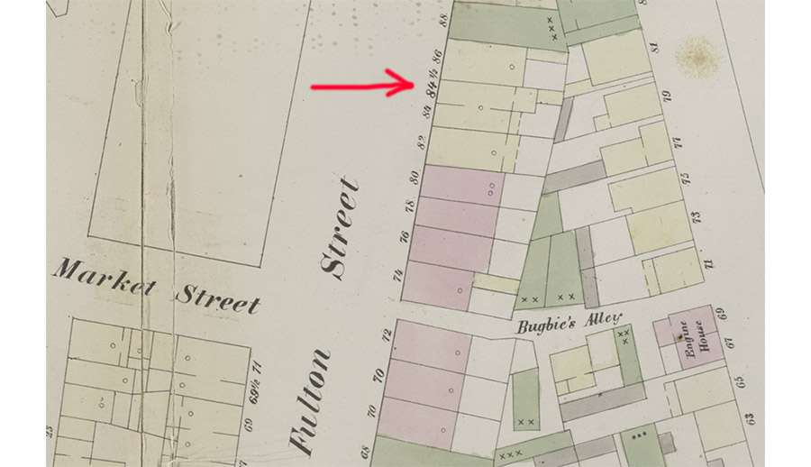
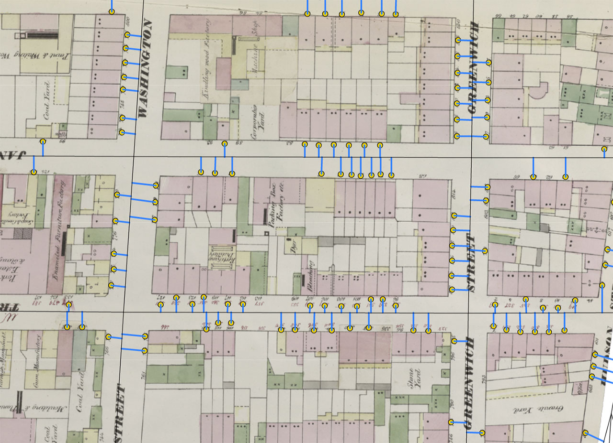

NYC Space/Time Directory: make the Library's collections and NYC's history more accessible, through space & time
Tonight's goal: show how we can make historical addresses searchable, using NYPL data

What do we need?
Locations of historical addresses and streets
1. Map Warper
2. Building Inspector
3. Historical Streets
NYC Space/Time Directory: all NYPL's historical geospatial data in one place and one format
Now, we need to connect house numbers with streets

Soon: more tutorials and ways to contribute on Space/Time website
Thanks!